Passo a passo do sistema de agenda do Espaço TEA Vila Entre Rios: agenda, agendamentos, pacientes, fila interna, lembretes, enfermagem e evoluções.
Prefeitura de Belford Roxo · Operação: CEPRESS Versão do sistema: 25 · Outubro de 2026 As imagens deste manual usam pacientes e profissionais fictícios.
Sumário
Como entrar e sair do sistema
O que cada perfil pode fazer
Agenda do dia
Presença, confirmação, falta e cancelamento
Remarcar e passar para outro dia
Agendar um atendimento
Pacientes: buscar, cadastrar e abrir a ficha
Fila interna
Lembretes pelo WhatsApp
Enfermagem
Evoluções (profissionais)
Painel do dia
Mensagens de aviso: o que significam e o que fazer
Regras de ouro
1Como entrar e sair do sistema
O sistema fica dentro do site do Espaço TEA. A parte pública (apresentação da unidade) qualquer pessoa autorizada vê; a parte de trabalho fica na Área da equipe, que só abre com o seu código pessoal.
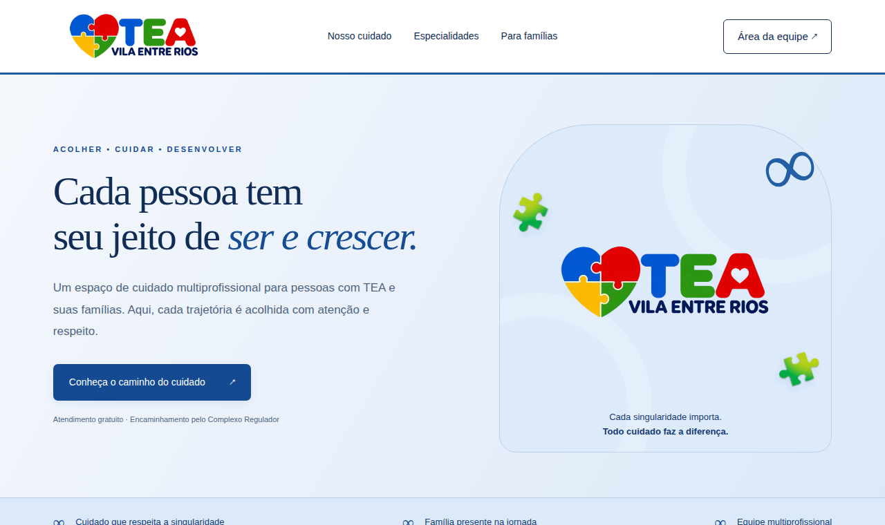
Página inicial do site. O botão Área da equipe fica no canto superior direito.
Entrar
Abra o link do sistema que a direção passou para você (guarde nos favoritos do navegador).
Se o Google pedir, entre com a sua conta Google.
Clique em Área da equipe ↗.
Digite o seu código de acesso (10 letras e números) e clique em Entrar. Aguarde aparecer "Verificando…" e depois a sua tela.
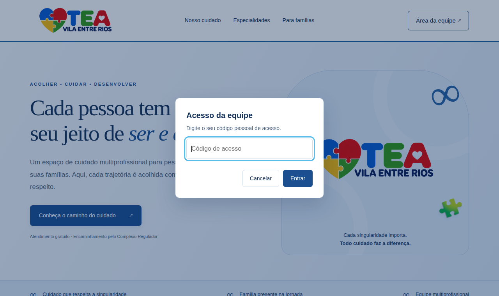
Janela do código de acesso.
O código é pessoal.Tudo o que você grava fica registrado com o seu nome. Não passe o seu código para ninguém e não use o código de outra pessoa. Se esquecer ou achar que alguém viu, peça um código novo à Administradora geral.
Errou o código 5 vezes?O computador fica bloqueado por 10 minutos. Espere e tente de novo com calma (confira letras maiúsculas e minúsculas).
Sair
Sair da conta ↗ (canto superior direito): use sempre que terminar, principalmente em computador compartilhado.
Voltar ao site ↗: volta para a página pública, mas continua logado.
Se o sistema ficar 30 minutos sem uso, ele sai sozinho e pede o código de novo.
Fechar o navegador também apaga o acesso.
2O que cada perfil pode fazer
O menu da esquerda mostra só o que o seu perfil pode usar. Se você não vê um item, é porque ele não é da sua função.
Perfil
O que faz no sistema
Recepção
Agenda, agendamentos, pacientes (cadastro e edição), fila interna, painel, lembretes e consulta da enfermagem. Não vê conteúdo clínico (evoluções).
Administração
Tudo o que a Recepção faz, mais o cadastro de profissionais e os bloqueios (férias, licenças, feriados).
Profissional
Vê só a própria agenda e os próprios pacientes. Marca presença e falta, faz evoluções, compartilha evoluções. A conta de Enfermagem registra a passagem dos pacientes.
Direção / CEPRESS
Tudo o que a Administração faz, mais indicadores, meta, fechamento do mês e histórico de alterações. Veja o Manual da Direção.
Administradora geral
Tudo, inclusive criar os acessos da equipe. Veja o Manual da Direção.
Tudo fica salvo na hora.Não existe botão "salvar tudo": cada clique em Presença, Falta, Agendar etc. já grava na planilha da unidade, e todos os computadores veem a mesma informação. Enquanto o sistema grava, a tela mostra "Aguarde…" — espere terminar antes de clicar de novo.
3Agenda do dia
É a primeira tela depois de entrar. Cada coluna é um profissional, com a especialidade, a sala, o horário do turno e quantos atendimentos tem no dia.
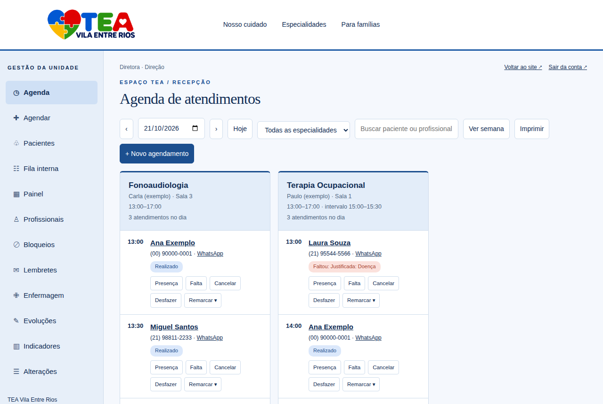
Agenda do dia: uma coluna por profissional.
Como navegar
‹ e › passam para o dia anterior ou o próximo. O campo de data deixa escolher qualquer dia. Hoje volta para hoje.
Todas as especialidades: escolha uma especialidade para ver só as colunas dela.
Buscar paciente ou profissional: digite parte do nome. Se for profissional ou especialidade, a coluna inteira aparece; se for paciente, aparecem só os horários dele.
Clique no nome do paciente para abrir a ficha dele.
O telefone aparece embaixo do nome; o link WhatsApp abre a conversa (no computador abre o WhatsApp Web).
Ver semana mostra a semana inteira de um profissional (segunda a sábado). Em cada dia, "Abrir o dia ›" volta para a agenda daquele dia.
Imprimir imprime a agenda do dia (sem os botões).
+ Novo agendamento abre a tela Agendar.
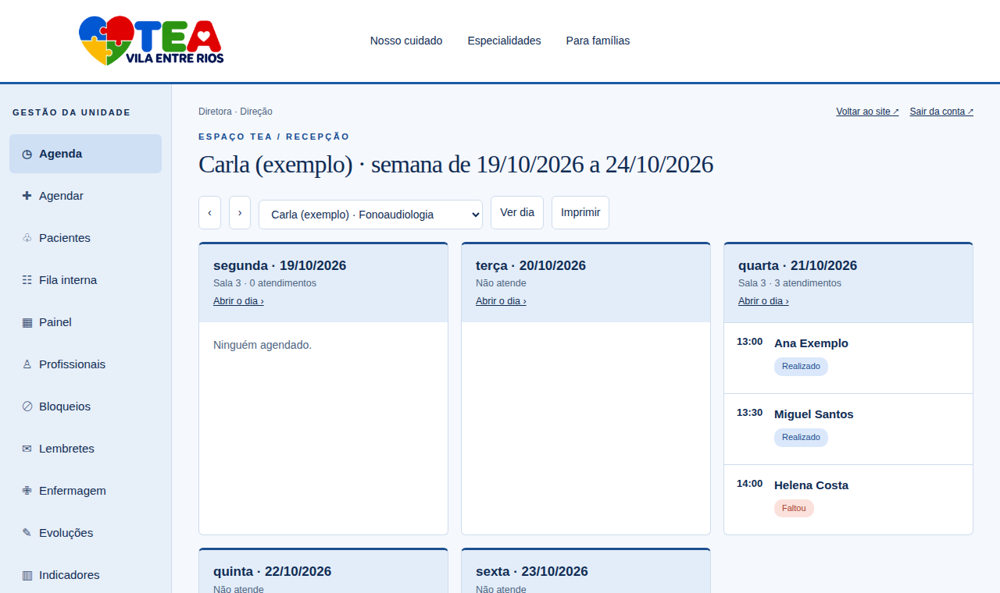
Ver semana: a semana de um profissional.
Situações de cada atendimento
Situação
Significa
Agendado
Marcado, ainda sem confirmação.
Confirmado
A família confirmou que vem.
Realizado
O paciente veio (presença registrada).
Faltou
Não veio. Pode ter justificativa.
Cancelado
Sessão cancelada. O horário fica livre.
Remarcado
Foi mudado para outro dia/horário (a sessão nova aparece no dia novo).
Sem atendimento
O dia está bloqueado (feriado, férias ou licença do profissional). Avise ou remarque o paciente.
Paciente inativo
O paciente foi inativado, mas a vaga fixa dele ainda existe. Peça para encerrar a vaga na ficha.
Tipos de agenda: terapias têm horário fixo (ex.: 13:00, 13:30…); médicos como psiquiatria e neuropediatria atendem por ordem de chegada (a coluna mostra 1º, 2º, 3º… e o limite do dia, ex.: "5/30 no dia"); serviços livres (como Serviço Social) não têm agenda.
4Presença, confirmação, falta e cancelamento
Os botões ficam embaixo de cada paciente na agenda.
Confirmar
Quando a família confirmar (por telefone ou WhatsApp), clique em Confirmar. A situação muda para Confirmado.
Registrar presença
Quando o paciente chegar e for atendido, clique em Presença. A situação muda para Realizado.
Registrar falta
Clique em Falta. Abre um quadro embaixo do paciente.
Em Falta, escolha: Sem justificativa ou um motivo justificado (Doença, Consulta ou exame, Problema de transporte, Viagem, Outro motivo).
Se quiser, escreva uma Observação (ex.: "mãe avisou por WhatsApp").
Clique em Registrar falta.
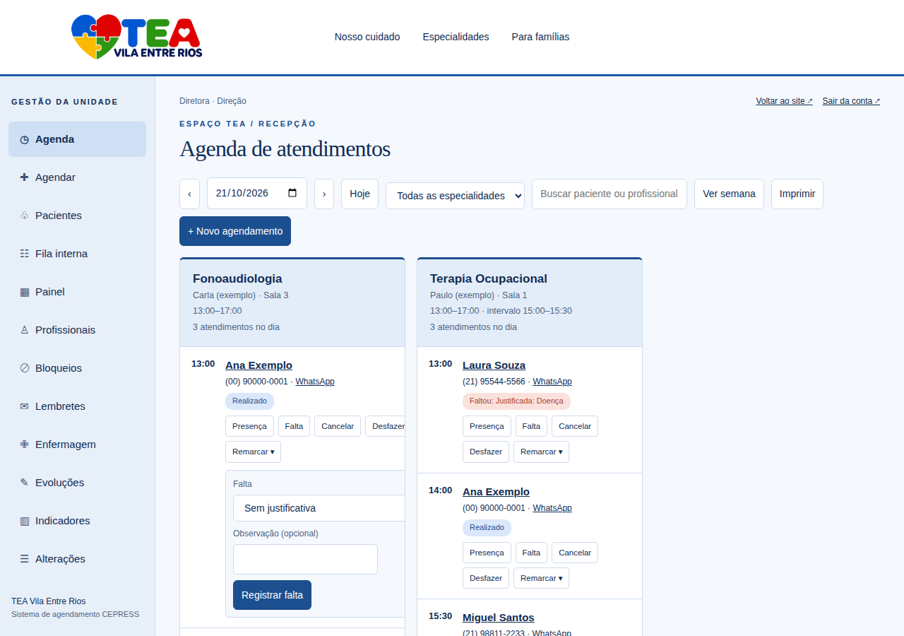
Quadro da falta com justificativa.
Por que a justificativa importa?Três faltas seguidas sem justificativa com o mesmo profissional fazem o paciente aparecer no Painel para a direção decidir (encerrar a vaga e pôr na fila, ou inativar). Falta justificada não conta para essa regra.
Cancelar
Clique em Cancelar. O botão muda para Confirmar cancelamento.
Clique de novo para confirmar. (O segundo clique evita cancelar sem querer.)
Errou? Use Desfazer
Depois de marcar Confirmado, Realizado, Faltou ou Cancelado aparece o botão Desfazer, que volta para Agendado. Se o horário já foi ocupado por outra pessoa, o sistema avisa e não desfaz.
Quando não dá para mudar
Atendimento que já tem evolução do profissional não pode ser cancelado, desfeito nem remarcado.
Meses fechados pela direção não aceitam mais mudanças (aparece "O mês … está fechado").
5Remarcar e passar para outro dia
Atendimento com horário (terapias)
Clique em Remarcar ▾ embaixo do paciente.
Se quiser, escreva o Motivo.
Escolha a Nova data e o Horário.
Clique no botão azul Remarcar do quadro. O horário antigo fica Remarcado e a sessão nova aparece como avulsa no dia novo.
Ordem de chegada (médicos)
Clique em Passar ▾.
Escolha o dia em Passar para o dia e clique no botão azul Passar. O paciente entra no fim da lista daquele dia.
Se o dia escolhido estiver lotado, o sistema oferece Colocar na fila interna.
Só muda uma sessãoRemarcar muda apenas aquela data. A vaga fixa (toda semana / quinzena) continua igual nas outras datas. Para acabar com a vaga fixa, use Encerrar na ficha do paciente (capítulo 7).
Clicar de novo em Remarcar ▾ fecha o quadro sem mudar nada.
6Agendar um atendimento
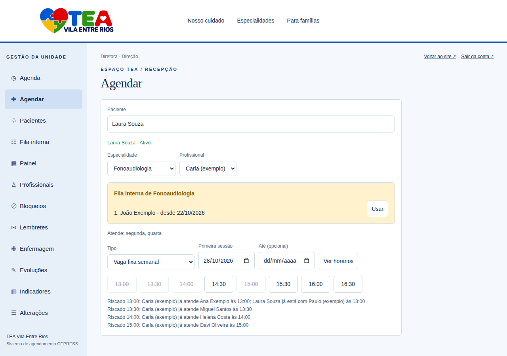
Tela Agendar: paciente, especialidade, profissional, tipo e horários livres.
No menu, clique em Agendar (ou em + Novo agendamento na Agenda).
Em Paciente, comece a digitar o nome (ou o número do prontuário) e escolha na lista. Aparece a situação do paciente e, se ele estiver na fila interna, um aviso amarelo com o botão Usar.
Escolha a Especialidade. Se houver só um profissional, ele já vem escolhido; se houver mais, escolha o Profissional. A tela mostra os dias e horários em que ele atende.
Escolha o Tipo:
Consulta avulsa — uma vez só;
Vaga fixa semanal — toda semana, mesmo dia e horário;
Vaga fixa quinzenal — a cada 2 semanas (14 dias, sempre no mesmo dia da semana);
Vaga fixa a cada 4 semanas.
Escolha a Primeira sessão (data). Para vaga fixa, se já souber, preencha Até (opcional); sem data final ela continua até ser encerrada.
Clique em Ver horários. Horários livres aparecem como botões; os ocupados aparecem riscados.
Clique no horário desejado e depois em Confirmar agendamento. Aparece a confirmação em verde.
Ordem de chegada (psiquiatria, neuropediatria…)
Escolha paciente, especialidade e a data.
Clique em Colocar na lista. O paciente entra no fim da lista do dia.
Se o dia estiver lotado, aparece Colocar na fila interna de ….
O sistema não deixa agendar quando…
o horário já é de outro paciente (inclusive vagas fixas nas semanas seguintes);
o horário está fora do expediente do profissional ou no intervalo (almoço);
o dia está bloqueado (feriado, férias, licença);
o paciente já tem atendimento com o mesmo profissional naquele dia;
o profissional já atingiu o máximo de atendimentos do dia;
o paciente está inativo ou o mês está fechado.
A mensagem explica o motivo. Escolha outro horário ou outro dia.
7Pacientes: buscar, cadastrar e abrir a ficha
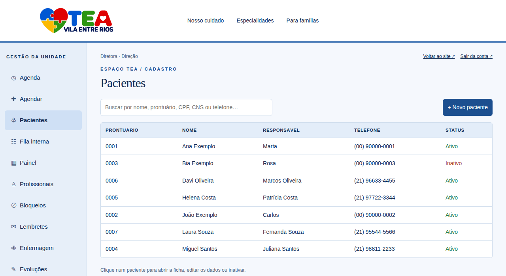
Lista de pacientes, inclusive os inativos.
Buscar
No campo de busca, digite nome, prontuário, CPF, CNS (cartão do SUS) ou telefone. A lista filtra enquanto você digita. Clique na linha para abrir a ficha.
Cadastrar paciente novo
Clique em + Novo paciente.
Preencha Prontuário e Nome (obrigatórios), responsável e telefone com DDD.
Preencha documentos (CPF, CNS), data de nascimento (a idade aparece sozinha), endereço.
Em Perfil e suporte, marque um ou mais perfis (TEA, DI, TOD, TDAH, TDI, AVALIAÇÃO, OUTROS) e o nível de suporte. Use os campos "Outros (especifique)" quando precisar.
Clique em Salvar.
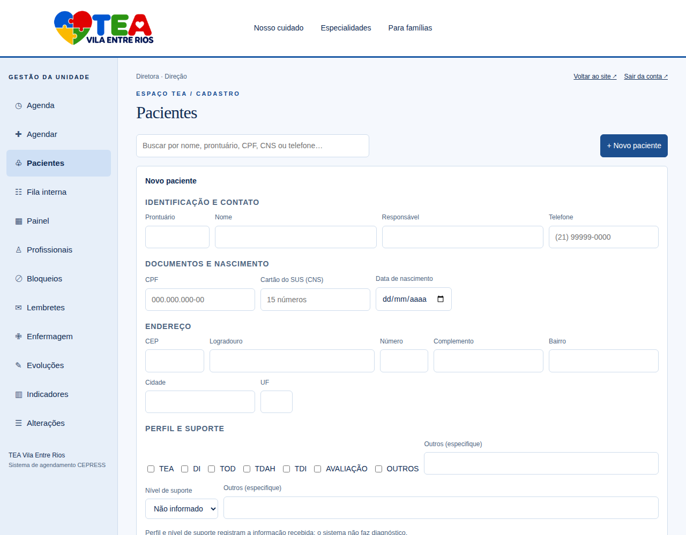
Cadastro de paciente.
O sistema confereCPF e CNS precisam ser válidos, e não aceita prontuário nem CPF repetido. O perfil e o nível de suporte registram a informação recebida — o sistema não faz diagnóstico.
A ficha do paciente
A ficha mostra: dados cadastrais, totais (realizados, faltas, agendados sem registro), terapias e profissionais, vagas fixas, fila interna e o histórico de atendimentos. Profissionais também veem as evoluções que podem ler.
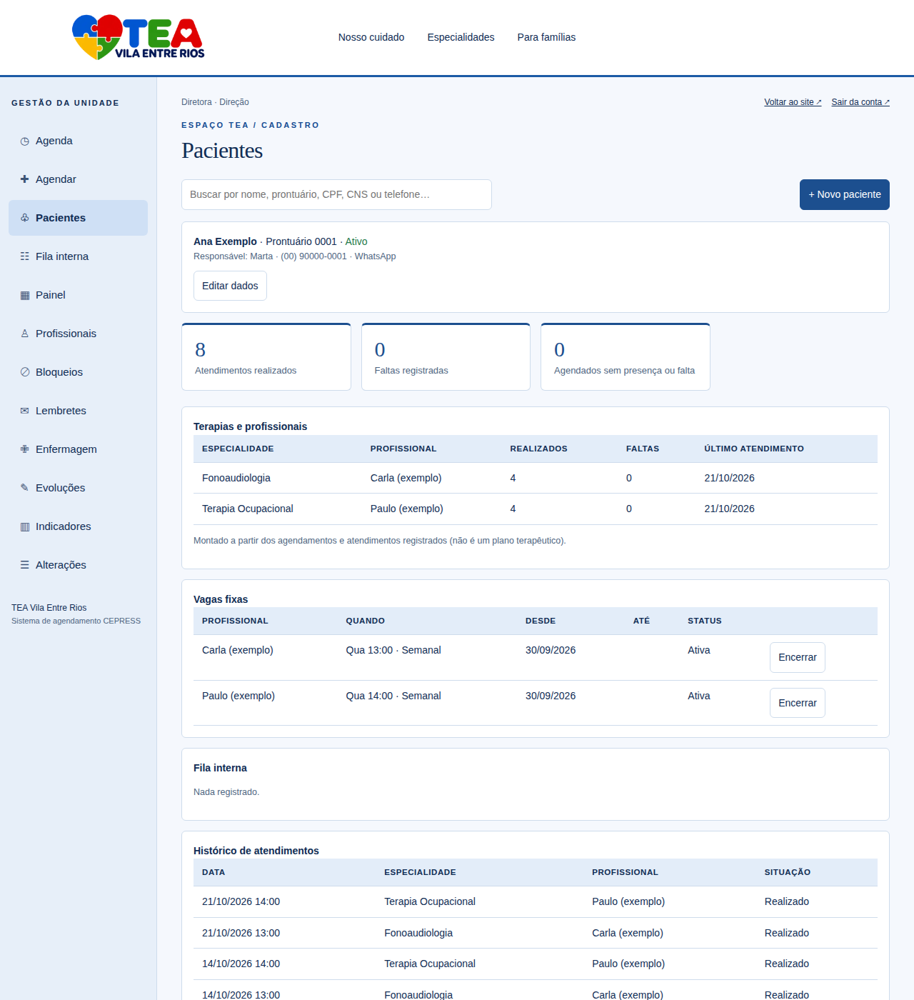
Ficha do paciente.
Editar ou inativar
Na ficha, clique em Editar dados.
Corrija o que precisar. Para inativar (alta, desistência, mudança…), em Status escolha Inativo e escreva o Motivo.
Clique em Salvar.
Encerrar uma vaga fixa
Na ficha, em Vagas fixas, clique em Encerrar na vaga.
Escolha o Último dia e clique em Encerrar. A partir do dia seguinte o horário fica livre para outro paciente.
8Fila interna
A fila interna é para pacientes que já são da unidade e esperam vaga em outra terapia. (A fila externa do Complexo Regulador não passa por este sistema.)
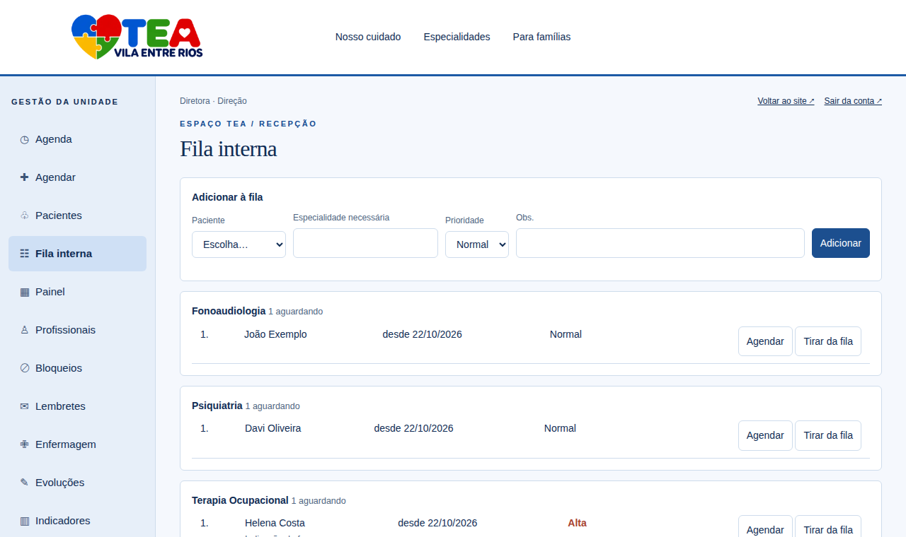
Fila interna separada por especialidade, com prioridade.
Colocar na fila
No menu, clique em Fila interna.
Em Adicionar à fila, escolha o Paciente na lista e digite a Especialidade necessária.
Escolha a Prioridade (Normal ou Alta) e, se quiser, uma observação.
Clique em Adicionar.
Quando surgir a vaga
Na especialidade, quem tem prioridade Alta aparece primeiro; depois, por ordem de chegada.
Clique em Agendar na linha do paciente. A tela Agendar abre já com o paciente e a especialidade.
Ao confirmar o agendamento, o paciente sai da fila.
Para retirar alguém sem agendar, clique em Tirar da fila e confirme.
9Lembretes pelo WhatsApp
A tela Lembretes lista os atendimentos de um dia (já vem com amanhã) com a mensagem de lembrete pronta para cada família.
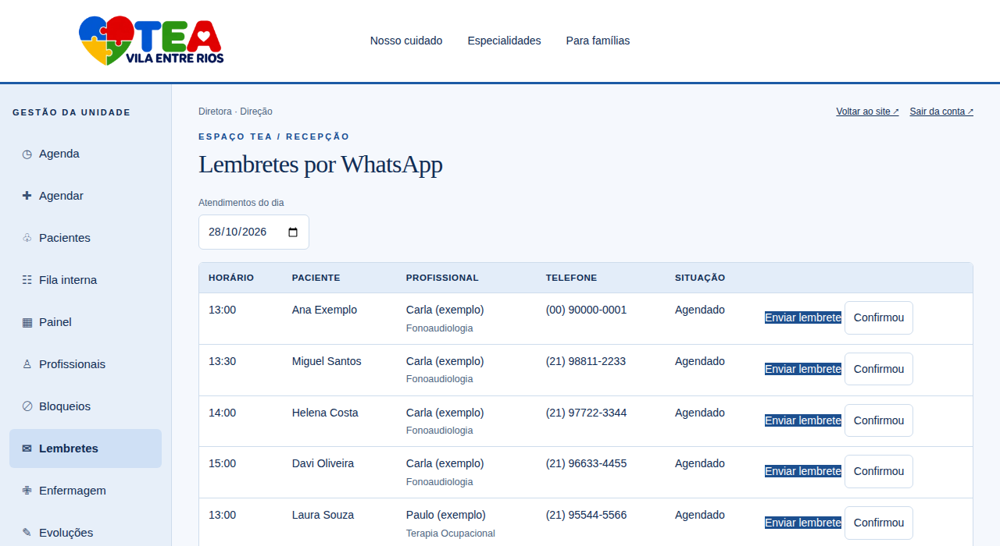
Lembretes do dia: um botão por paciente.
Abra Lembretes (mude a data se quiser outro dia).
Clique em Enviar lembrete. O WhatsApp abre com a mensagem escrita: nome do paciente, especialidade, profissional, dia e horário.
Confira e envie no WhatsApp. O botão no sistema muda para "Lembrete aberto ✓" para você saber onde parou.
Quando a família responder confirmando, clique em Confirmou. A sessão fica Confirmado também na agenda.
O sistema não envia sozinhoQuem envia é você, pelo WhatsApp da unidade. Pacientes sem celular cadastrado aparecem como "Sem celular cadastrado" — atualize o telefone na ficha.
10Enfermagem
Todos os pacientes agendados no dia devem passar pela enfermagem. A enfermagem não tem horário fixo e não tem falta: só se registra quem passou.
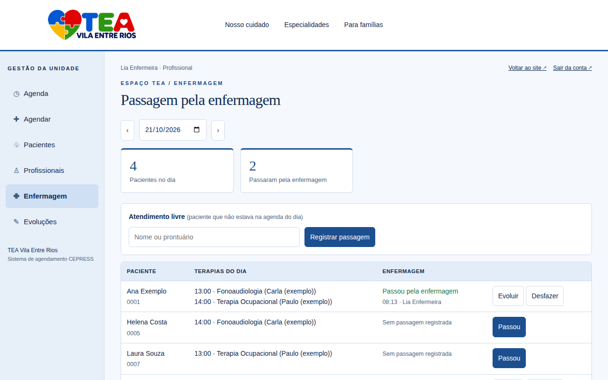
Tela da Enfermagem: cada paciente uma vez, com as terapias do dia.
Para a enfermagem (conta ligada a um profissional de Enfermagem)
Abra Enfermagem. Aparecem todos os pacientes agendados no dia, cada um uma vez, com as terapias e horários daquele dia.
Quando o paciente passar, clique em Passou. Fica "Passou pela enfermagem", com a hora e quem registrou.
Para atender alguém que não estava na agenda, use Atendimento livre: digite o nome, escolha e clique em Registrar passagem.
Depois da passagem, clique em Evoluir para fazer a evolução de enfermagem (capítulo 11).
Marcou errado? Use Desfazer e confirme (só enquanto não houver evolução).
Para recepção e direçãoA tela também abre para vocês, mas só para consulta: dá para ver quem já passou e quem está "Sem passagem registrada". A passagem pela enfermagem não marca presença nas outras terapias.
11Evoluções (profissionais)
A evolução é o registro clínico do atendimento. Só faz evolução quem tem a conta ligada ao profissional que atendeu, e só depois de registrada a presença. Não dá para evoluir atendimento futuro.
Fazer uma evolução
Marque a Presença do paciente na Agenda.
Clique em Evoluir no paciente (na Agenda) — ou abra Evoluções, onde ficam os Atendimentos para evoluir dos últimos 60 dias, e clique em Evoluir.
Preencha o formulário da sua especialidade:
Objetivo da sessão e Duração (minutos);
Chegada do paciente — marque com X e use "Outros" se precisar;
Condutas realizadas — itens próprios da sua especialidade;
Resposta do paciente e Saída do paciente;
Observações e plano para a próxima sessão.
Clique em Salvar evolução.
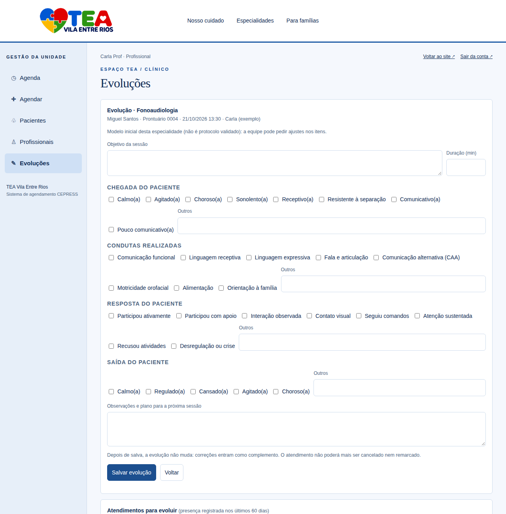
Formulário de evolução (exemplo: Fonoaudiologia).
Depois de salva, a evolução não mudaPara corrigir ou acrescentar algo, abra a ficha do paciente, vá em Evoluções e clique em Adicionar complemento. O complemento fica embaixo da original, com data e autor. O atendimento evoluído também não pode mais ser cancelado nem remarcado.
Ver as evoluções e o gráfico
Na ficha do paciente, o quadro Evoluções mostra as suas evoluções e as que foram compartilhadas com você. Em cima, o gráfico mostra, mês a mês, em quantas % das evoluções um item foi marcado. Escolha o Item e o Autor.
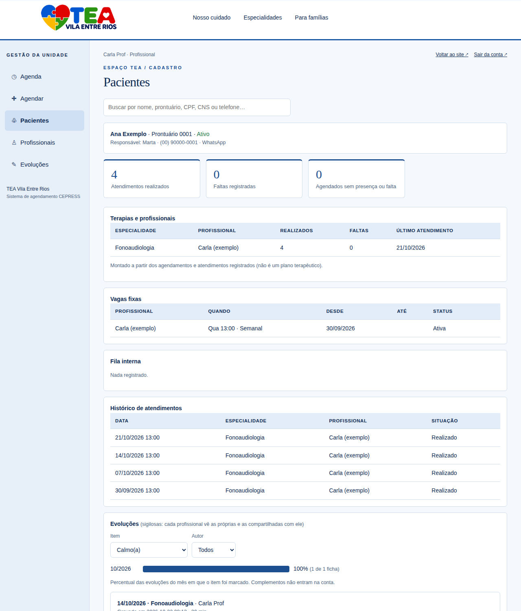
Evoluções na ficha, com o gráfico mensal.
O gráfico mostra frequência de marcação, não melhora clínica: item sem X quer dizer "não registrado". Complementos não entram na conta.
Compartilhar uma evolução
As evoluções são sigilosas: outro profissional só lê se você autorizar.
Na sua evolução, clique em Compartilhar.
Em Liberar leitura para, escolha a pessoa.
Em O quê, escolha: Só esta evolução, Todas as minhas deste paciente ou Todas as minhas evoluções.
Clique em Autorizar.
Quem recebe só lê — não edita, não complementa e não ganha acesso à ficha do paciente. Para cancelar, abra Evoluções, em Leituras que autorizei clique em Revogar e confirme.
As evoluções que outras pessoas compartilharam com você ficam em Evoluções → Evoluções compartilhadas comigo: clique no nome do paciente para ler.
Quem mais vê?A Administradora geral pode consultar todas as evoluções; cada consulta fica registrada no histórico. Recepção e Administração não veem evoluções.
12Painel do dia
O Painel resume a unidade: pacientes ativos e capacidade, atendimentos, realizados e faltas de hoje, faltas, cancelamentos e remarcações do mês, a ordem de chegada de hoje, resumo por especialidade e os pacientes que mais faltaram nos últimos 60 dias.
Painel da unidade.
Quando um paciente tem 3 faltas seguidas sem justificativa, ele aparece no quadro do mesmo nome, com duas opções: Encerrar vaga e pôr na fila ou Inativar paciente (cada uma pede confirmação). Essa decisão normalmente é da direção.
13Mensagens de aviso: o que significam e o que fazer
Mensagem
O que fazer
Código de acesso inválido
Confira o código (maiúsculas/minúsculas). Se não lembrar, peça um novo à Administradora geral.
Muitas tentativas erradas neste aparelho
Espere 10 minutos e tente de novo.
Este acesso foi desativado
Fale com a Administradora geral.
Você saiu automaticamente depois de 30 minutos sem uso
Normal. Digite o código de novo.
O horário já foi ocupado / já atende …
Outra pessoa pegou o horário. Escolha outro.
Fora do horário do profissional
O profissional não atende nesse dia/horário (ou é intervalo). Veja os horários na tela Agendar.
Sem atendimento neste dia: …
Feriado, férias ou licença. Escolha outro dia.
LOTADO
A lista do dia (ordem de chegada) está cheia. Use outro dia ou a fila interna.
O mês … está fechado
A direção fechou o mês. Só a Administradora geral reabre.
Já tem evolução registrada
Atendimento evoluído não muda. Fale com o profissional.
Registre a presença do paciente antes de fazer a evolução
Marque Presença na Agenda e depois evolua.
Seu acesso é só à sua própria agenda
Perfil Profissional só mexe nos próprios atendimentos.
CPF inválido / CNS inválido / Já existe o prontuário
Confira os números digitados.
Se aparecer qualquer outro erro, anote a mensagem (ou tire uma foto da tela) e avise a direção.
14Regras de ouro
Use sempre o seu código e saia da conta ao terminar.
Registre presença e falta no mesmo dia — os indicadores e a regra das 3 faltas dependem disso.
Sempre que souber o motivo da falta, escolha a justificativa.
Não mexa direto na planilha: use as telas do sistema. A planilha é responsabilidade da direção.
Espere o "Aguarde…" terminar antes de clicar de novo.
Evoluções são dados de saúde: não copie, não imprima e não envie por WhatsApp sem necessidade.
Na dúvida, pergunte antes de cancelar ou inativar.